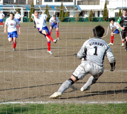
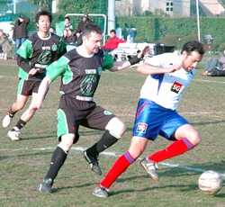
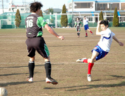

|
YC&AC, Sun 5th March. Well. Let's forget the basic report for that game and try to find proper adjectives for this "funny" football game.
Musical
1st Half : charge of the Valkyries.
2nd Half : French cancan
From the sideline we could here a few classical music lovers complain :
Olly Worsfold moaning, "Pfff, none of the Valkyries are blonde. Nor Sexy. What a rip off"
Sid Lloyd grunting "You don't say, the French legs are hairy and bowed.
What a nightmare"
Diplomatic
An amazing international row is about to burst into flames following last Sunday outrageous ignominy. The French team playing in Japan against the league leaders, were leading 1-0 and a man up, when the referee outrageously decided for 35 minutes additional time to be played to the half. The Hibs coalition make quick work of the incredible decision to take the lead 7-1 at half time. The French President appealed to Nato for a just settlement. Georges Bush, is considering sending troops to counter the Hibs soccer-weapons of mass destruction to protect the oil drilling that is about to start at the YC&AC ground.
Sid Lloyd the game organizer replied to the international press : "Hey, they deserved to lose they've got hairy, bowed legs, for God's sake".
Chauvinist
Hibs won the first half. We won the second. A good point earned from this draw. Actually with 11 men against 10 it should be a win for the French. The league's decision is pending after the French captain's report was filed late yesterday. Any other decision than awarding 3 points the French would be "un scandale, oui Mossieur".
Colorful
1 red.
1 yellow.
And I quite don't remember much more given that all the colors of the fireworks blinded me a tad.
Statistical
13 goals.
8 in the same half.
11 in the same goal !
90% accuracy on shots at goals in the first half.
A hat trick (I helped a bit there with my shaky goalkeeping)
11 men against 10.
One great afternoon of goalkeeping.
Hopeful
There is still hope for YC&AC if they are aggressive in the midfield. Scoring goals is possible against Hibs (yeah I know they were only ten men and 8-1 up, but still).
Hopeless
There is less hope for Sala as we will be back to our more composed and spirited selves for ZE semifinal of the cup. With our hairy and bowed legs, that is.
All in all a very, very impressive first half from Hibs with a French team a little bit absent from the game exposing the second string keeper's weaknesses. Very fair game, great piece of refereeing and yeah, a goalfest. And a couple of screamers rarely seen in the league from Josh and Yohei.
Report - Manu.
|